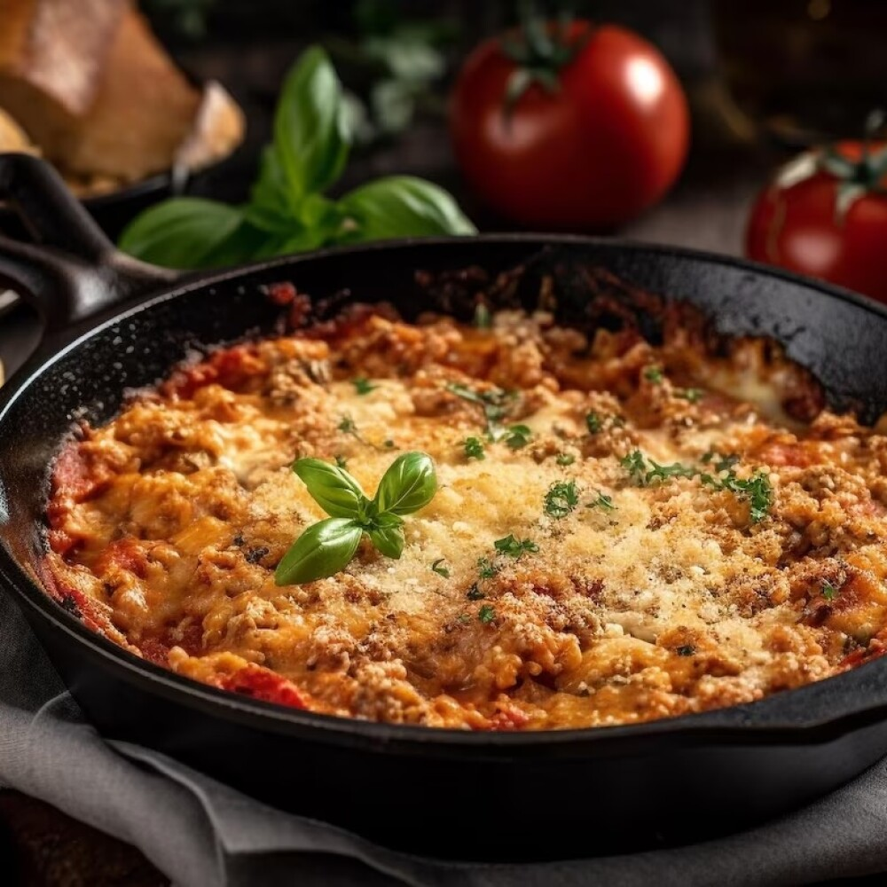

- Ingredientes
- 1 1/2 Tazas de puré de tomate natural
- 2 Cucharadas de hierbas finas molidas
- 1/2 Taza de agua
- 1 Cubo de Concentrado de Tomate con Pollo
- 3 Cucharadas de aceite vegetal
- 2 Cucharadas de cebolla picada finamente
- 1 Diente de ajo picado finamente
- 600 Gramos de carne molida de res
- 2 Cucharadas de Jugo MAGGI
- 4 Cucharadas de Salsa Tipo Inglesa CROSSE & BLACKWELL
- 1 Cucharada de sal con cebolla en polvo
- 9 Láminas de pasta para lasaña
- 200 Gramos de queso tipo manchego rallado
- 2 Ramas de perejil desinfectado y picado finamente
Procedimiento
Para la salsa, licúa el puré de tomate con las hierbas finas, el agua y el Concentrado de Tomate con Pollo CONSOMATE; cocina hasta que espese ligeramente.Para el relleno, calienta 2 cucharadas de aceite, fríe la cebolla con el ajo hasta que cambien de color, agrega la carne, el Jugo MAGGI, la Salsa Tipo Inglesa CROSSE & BLACKWELL y la sal con cebolla; cocina por 8 minutos o hasta que la carne esté cocida.En una sartén, unta el aceite restante, vierte un poco de la salsa, añade una capa de 3 láminas de pasta, una de relleno, otra de salsa y una más de queso; repite el procedimiento hasta terminar con el resto de los ingredientes. Tapa y cocina a fuego bajo por 17 minutos. Decora con el perejil y ofrece.